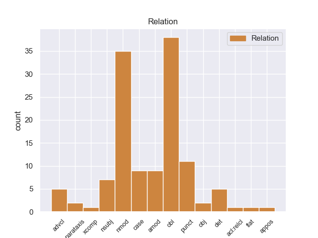
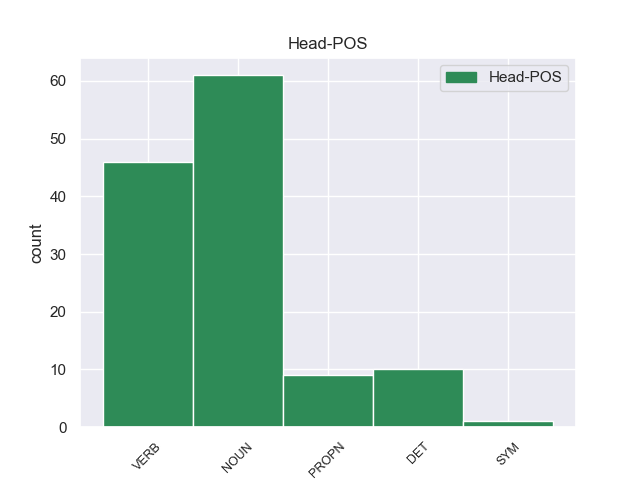
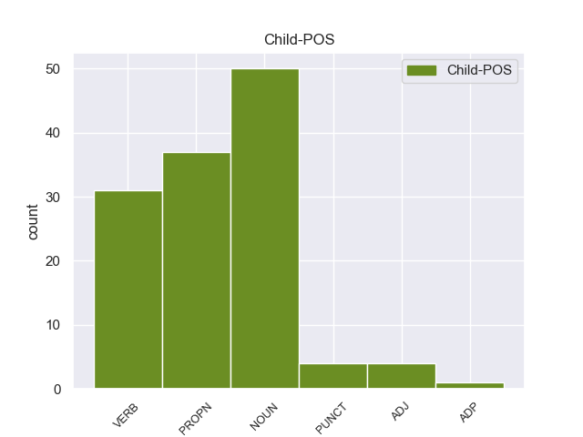

Distribution of features within this leaf



Agreement Rules sorted by frequency.
- When the dependent token is the nominal modifier(nmod) of the head token, and the head token is NOUN and the dependent token is NOUN.
1 El _ _ _ _ 0 _ _ _
2 mandatario mandatario NOUN _ Mood=Ind|Number=Sing|Person=3|Tense=Pres|VerbForm=Fin 42 nmod _ _
3 uruguayo _ _ _ _ 0 _ _ _
4 , _ _ _ _ 0 _ _ _
5 quien _ _ _ _ 0 _ _ _
6 llegó _ _ _ _ 0 _ _ _
7 el _ _ _ _ 0 _ _ _
8 domingo _ _ _ _ 0 _ _ _
9 a _ _ _ _ 0 _ _ _
10 Paraguay _ _ _ _ 0 _ _ _
11 , _ _ _ _ 0 _ _ _
12 inició _ _ _ _ 0 _ _ _
13 este _ _ _ _ 0 _ _ _
14 lunes _ _ _ _ 0 _ _ _
15 sus _ _ _ _ 0 _ _ _
16 actividades _ _ _ _ 0 _ _ _
17 a _ _ _ _ 0 _ _ _
18 el _ _ _ _ 0 _ _ _
19 colocar _ _ _ _ 0 _ _ _
20 una _ _ _ _ 0 _ _ _
21 ofrenda _ _ _ _ 0 _ _ _
22 floral _ _ _ _ 0 _ _ _
23 en _ _ _ _ 0 _ _ _
24 el _ _ _ _ 0 _ _ _
25 Panteón _ _ _ _ 0 _ _ _
26 de _ _ _ _ 0 _ _ _
27 los _ _ _ _ 0 _ _ _
28 Héroes _ _ _ _ 0 _ _ _
29 , _ _ _ _ 0 _ _ _
30 tras _ _ _ _ 0 _ _ _
31 lo _ _ _ _ 0 _ _ _
32 cual _ _ _ _ 0 _ _ _
33 se _ _ _ _ 0 _ _ _
34 trasladó _ _ _ _ 0 _ _ _
35 a _ _ _ _ 0 _ _ _
36 el _ _ _ _ 0 _ _ _
37 Palacio _ _ _ _ 0 _ _ _
38 de _ _ _ _ 0 _ _ _
39 Gobierno _ _ _ _ 0 _ _ _
40 donde _ _ _ _ 0 _ _ _
41 fue _ _ _ _ 0 _ _ _
42 condecorado condecorado NOUN _ Mood=Ind|Number=Sing|Person=3|Tense=Pres|VerbForm=Fin 0 _ _ _
43 por _ _ _ _ 0 _ _ _
44 Lugo _ _ _ _ 0 _ _ _
45 . _ _ _ _ 0 _ _ _
1 A _ _ _ _ 0 _ _ _
2 las _ _ _ _ 0 _ _ _
3 mismas _ _ _ _ 0 _ _ _
4 asistieron asistieron NOUN _ Mood=Ind|Number=Sing|Person=3|Tense=Past|VerbForm=Fin 0 _ _ _
5 más _ _ _ _ 0 _ _ _
6 de _ _ _ _ 0 _ _ _
7 quinientos _ _ _ _ 0 _ _ _
8 Magistrados _ _ _ _ 0 _ _ _
9 y _ _ _ _ 0 _ _ _
10 Funcionarios funcionarios NOUN _ Mood=Ind|Number=Sing|Person=3|Tense=Past|VerbForm=Fin 4 obl _ _
11 judiciales _ _ _ _ 0 _ _ _
12 de _ _ _ _ 0 _ _ _
13 el _ _ _ _ 0 _ _ _
14 Fuero _ _ _ _ 0 _ _ _
15 Penal _ _ _ _ 0 _ _ _
16 , _ _ _ _ 0 _ _ _
17 Legisladores _ _ _ _ 0 _ _ _
18 y _ _ _ _ 0 _ _ _
19 abogados _ _ _ _ 0 _ _ _
20 de _ _ _ _ 0 _ _ _
21 la _ _ _ _ 0 _ _ _
22 matrícula _ _ _ _ 0 _ _ _
23 . _ _ _ _ 0 _ _ _
1 En _ _ _ _ 0 _ _ _
2 Mayo _ _ _ _ 0 _ _ _
3 de _ _ _ _ 0 _ _ _
4 2011 _ _ _ _ 0 _ _ _
5 juega _ _ _ _ 0 _ _ _
6 el _ _ _ _ 0 _ _ _
7 Match _ _ _ _ 0 _ _ _
8 de _ _ _ _ 0 _ _ _
9 Candidatos _ _ _ _ 0 _ _ _
10 y _ _ _ _ 0 _ _ _
11 gana gana VERB _ Mood=Ind|Number=Sing|Person=3|Tense=Pres|VerbForm=Fin 0 _ _ _
12 primero _ _ _ _ 0 _ _ _
13 a _ _ _ _ 0 _ _ _
14 Levon _ _ _ _ 0 _ _ _
15 Aronian aronian PROPN _ Mood=Ind|Number=Sing|Person=3|Tense=Pres|VerbForm=Fin 11 nsubj _ _
16 y _ _ _ _ 0 _ _ _
17 deja _ _ _ _ 0 _ _ _
18 fuera _ _ _ _ 0 _ _ _
19 después _ _ _ _ 0 _ _ _
20 a _ _ _ _ 0 _ _ _
21 Vladimir _ _ _ _ 0 _ _ _
22 Kramnik _ _ _ _ 0 _ _ _
23 para _ _ _ _ 0 _ _ _
24 jugar _ _ _ _ 0 _ _ _
25 la _ _ _ _ 0 _ _ _
26 final _ _ _ _ 0 _ _ _
27 con _ _ _ _ 0 _ _ _
28 Boris _ _ _ _ 0 _ _ _
29 Gelfand _ _ _ _ 0 _ _ _
1 Washington _ _ _ _ 0 _ _ _
2 considera considera VERB _ Mood=Ind|Number=Sing|Person=3|Tense=Pres|VerbForm=Fin 0 _ _ _
3 que _ _ _ _ 0 _ _ _
4 la _ _ _ _ 0 _ _ _
5 propuesta _ _ _ _ 0 _ _ _
6 que _ _ _ _ 0 _ _ _
7 han han VERB _ Mood=Ind|Number=Sing|Person=3|Tense=Pres|VerbForm=Fin 2 obl _ _
8 hecho _ _ _ _ 0 _ _ _
9 EEUU _ _ _ _ 0 _ _ _
10 y _ _ _ _ 0 _ _ _
11 otros _ _ _ _ 0 _ _ _
12 países _ _ _ _ 0 _ _ _
13 a _ _ _ _ 0 _ _ _
14 Irán _ _ _ _ 0 _ _ _
15 mediante _ _ _ _ 0 _ _ _
16 el _ _ _ _ 0 _ _ _
17 OIEA _ _ _ _ 0 _ _ _
18 para _ _ _ _ 0 _ _ _
19 enriquecer _ _ _ _ 0 _ _ _
20 parte _ _ _ _ 0 _ _ _
21 de _ _ _ _ 0 _ _ _
22 su _ _ _ _ 0 _ _ _
23 uranio _ _ _ _ 0 _ _ _
24 en _ _ _ _ 0 _ _ _
25 el _ _ _ _ 0 _ _ _
26 exterior _ _ _ _ 0 _ _ _
27 y _ _ _ _ 0 _ _ _
28 después _ _ _ _ 0 _ _ _
29 entregár _ _ _ _ 0 _ _ _
30 se _ _ _ _ 0 _ _ _
31 lo _ _ _ _ 0 _ _ _
32 en _ _ _ _ 0 _ _ _
33 las _ _ _ _ 0 _ _ _
34 condiciones _ _ _ _ 0 _ _ _
35 que _ _ _ _ 0 _ _ _
36 lo _ _ _ _ 0 _ _ _
37 necesita _ _ _ _ 0 _ _ _
38 para _ _ _ _ 0 _ _ _
39 mantener _ _ _ _ 0 _ _ _
40 operativo _ _ _ _ 0 _ _ _
41 su _ _ _ _ 0 _ _ _
42 reactor _ _ _ _ 0 _ _ _
43 médico _ _ _ _ 0 _ _ _
44 en _ _ _ _ 0 _ _ _
45 Teherán _ _ _ _ 0 _ _ _
46 , _ _ _ _ 0 _ _ _
47 es _ _ _ _ 0 _ _ _
48 la _ _ _ _ 0 _ _ _
49 adecuada _ _ _ _ 0 _ _ _
50 y _ _ _ _ 0 _ _ _
51 cree _ _ _ _ 0 _ _ _
52 que _ _ _ _ 0 _ _ _
53 la _ _ _ _ 0 _ _ _
54 contra _ _ _ _ 0 _ _ _
55 oferta _ _ _ _ 0 _ _ _
56 de _ _ _ _ 0 _ _ _
57 la _ _ _ _ 0 _ _ _
58 República _ _ _ _ 0 _ _ _
59 Islámica _ _ _ _ 0 _ _ _
60 es _ _ _ _ 0 _ _ _
61 una _ _ _ _ 0 _ _ _
62 trampa _ _ _ _ 0 _ _ _
63 , _ _ _ _ 0 _ _ _
64 dado _ _ _ _ 0 _ _ _
65 que _ _ _ _ 0 _ _ _
66 sigue _ _ _ _ 0 _ _ _
67 sin _ _ _ _ 0 _ _ _
68 querer _ _ _ _ 0 _ _ _
69 negociar _ _ _ _ 0 _ _ _
70 " _ _ _ _ 0 _ _ _
71 de _ _ _ _ 0 _ _ _
72 buena _ _ _ _ 0 _ _ _
73 fe _ _ _ _ 0 _ _ _
74 " _ _ _ _ 0 _ _ _
75 . _ _ _ _ 0 _ _ _
1 En _ _ _ _ 0 _ _ _
2 septiembre _ _ _ _ 0 _ _ _
3 la _ _ _ _ 0 _ _ _
4 asignaron asignaron NOUN _ Mood=Ind|Number=Sing|Person=3|Tense=Past|VerbForm=Fin 0 _ _ _
5 - _ _ _ _ 0 _ _ _
6 junto _ _ _ _ 0 _ _ _
7 a _ _ _ _ 0 _ _ _
8 Katia _ _ _ _ 0 _ _ _
9 Budánova budánova PROPN _ Mood=Ind|Number=Sing|Person=3|Tense=Past|VerbForm=Fin 4 nmod _ _
10 , _ _ _ _ 0 _ _ _
11 otras _ _ _ _ 0 _ _ _
12 seis _ _ _ _ 0 _ _ _
13 mujeres _ _ _ _ 0 _ _ _
14 piloto _ _ _ _ 0 _ _ _
15 y _ _ _ _ 0 _ _ _
16 personal _ _ _ _ 0 _ _ _
17 de _ _ _ _ 0 _ _ _
18 tierra _ _ _ _ 0 _ _ _
19 femenino _ _ _ _ 0 _ _ _
20 - _ _ _ _ 0 _ _ _
21 a _ _ _ _ 0 _ _ _
22 el _ _ _ _ 0 _ _ _
23 437 _ _ _ _ 0 _ _ _
24 IAP _ _ _ _ 0 _ _ _
25 , _ _ _ _ 0 _ _ _
26 un _ _ _ _ 0 _ _ _
27 regimiento _ _ _ _ 0 _ _ _
28 masculino _ _ _ _ 0 _ _ _
29 corriente _ _ _ _ 0 _ _ _
30 que _ _ _ _ 0 _ _ _
31 luchaba _ _ _ _ 0 _ _ _
32 en _ _ _ _ 0 _ _ _
33 Stalingrado _ _ _ _ 0 _ _ _
34 , _ _ _ _ 0 _ _ _
35 donde _ _ _ _ 0 _ _ _
36 estaban _ _ _ _ 0 _ _ _
37 sufriendo _ _ _ _ 0 _ _ _
38 pérdidas _ _ _ _ 0 _ _ _
39 cuantiosas _ _ _ _ 0 _ _ _
40 . _ _ _ _ 0 _ _ _
1 Los _ _ _ _ 0 _ _ _
2 directivos _ _ _ _ 0 _ _ _
3 de _ _ _ _ 0 _ _ _
4 Athletic _ _ _ _ 0 _ _ _
5 , _ _ _ _ 0 _ _ _
6 votación votación NOUN _ Mood=Ind|Number=Sing|Person=3|Tense=Pres|VerbForm=Fin 0 _ _ _
7 mediante _ _ _ _ 0 _ _ _
8 , _ _ _ _ 0 _ _ _
9 eligieron eligieron VERB _ Mood=Ind|Number=Sing|Person=3|Tense=Pres|VerbForm=Fin 6 case _ _
10 como _ _ _ _ 0 _ _ _
11 nuevo _ _ _ _ 0 _ _ _
12 presidente _ _ _ _ 0 _ _ _
13 a _ _ _ _ 0 _ _ _
14 Julián _ _ _ _ 0 _ _ _
15 Ruete _ _ _ _ 0 _ _ _
16 , _ _ _ _ 0 _ _ _
17 un _ _ _ _ 0 _ _ _
18 hombre _ _ _ _ 0 _ _ _
19 trascendental _ _ _ _ 0 _ _ _
20 en _ _ _ _ 0 _ _ _
21 la _ _ _ _ 0 _ _ _
22 historia _ _ _ _ 0 _ _ _
23 de _ _ _ _ 0 _ _ _
24 el _ _ _ _ 0 _ _ _
25 club _ _ _ _ 0 _ _ _
26 . _ _ _ _ 0 _ _ _
1 Aun _ _ _ _ 0 _ _ _
2 así _ _ _ _ 0 _ _ _
3 , _ _ _ _ 0 _ _ _
4 los _ _ _ _ 0 _ _ _
5 soviéticos soviéticos PROPN _ Mood=Ind|Number=Sing|Person=3|Tense=Pres|VerbForm=Fin 0 _ _ _
6 y _ _ _ _ 0 _ _ _
7 británicos británicos PROPN _ Mood=Ind|Number=Sing|Person=3|Tense=Pres|VerbForm=Fin 5 nmod _ _
8 exigieron _ _ _ _ 0 _ _ _
9 previamente _ _ _ _ 0 _ _ _
10 que _ _ _ _ 0 _ _ _
11 Bulgaria _ _ _ _ 0 _ _ _
12 renunciara _ _ _ _ 0 _ _ _
13 a _ _ _ _ 0 _ _ _
14 el _ _ _ _ 0 _ _ _
15 litoral _ _ _ _ 0 _ _ _
16 de _ _ _ _ 0 _ _ _
17 el _ _ _ _ 0 _ _ _
18 sur _ _ _ _ 0 _ _ _
19 de _ _ _ _ 0 _ _ _
20 la _ _ _ _ 0 _ _ _
21 región _ _ _ _ 0 _ _ _
22 de _ _ _ _ 0 _ _ _
23 Tracia _ _ _ _ 0 _ _ _
24 ( _ _ _ _ 0 _ _ _
25 el _ _ _ _ 0 _ _ _
26 cual _ _ _ _ 0 _ _ _
27 se _ _ _ _ 0 _ _ _
28 había _ _ _ _ 0 _ _ _
29 anexado _ _ _ _ 0 _ _ _
30 en _ _ _ _ 0 _ _ _
31 junio _ _ _ _ 0 _ _ _
32 de _ _ _ _ 0 _ _ _
33 1941 _ _ _ _ 0 _ _ _
34 ) _ _ _ _ 0 _ _ _
35 , _ _ _ _ 0 _ _ _
36 devolviéndo _ _ _ _ 0 _ _ _
37 lo _ _ _ _ 0 _ _ _
38 a _ _ _ _ 0 _ _ _
39 Grecia _ _ _ _ 0 _ _ _
40 . _ _ _ _ 0 _ _ _
1 En _ _ _ _ 0 _ _ _
2 la _ _ _ _ 0 _ _ _
3 Jefatura _ _ _ _ 0 _ _ _
4 de _ _ _ _ 0 _ _ _
5 Gabinete _ _ _ _ 0 _ _ _
6 sostenían _ _ _ _ 0 _ _ _
7 anoche _ _ _ _ 0 _ _ _
8 que _ _ _ _ 0 _ _ _
9 esta _ _ _ _ 0 _ _ _
10 filtración _ _ _ _ 0 _ _ _
11 confirmaría _ _ _ _ 0 _ _ _
12 que _ _ _ _ 0 _ _ _
13 la _ _ _ _ 0 _ _ _
14 SIDE _ _ _ _ 0 _ _ _
15 - _ _ _ _ 0 _ _ _
16 en _ _ _ _ 0 _ _ _
17 el _ _ _ _ 0 _ _ _
18 2007 _ _ _ _ 0 _ _ _
19 -- _ _ _ _ 0 _ _ _
20 habría _ _ _ _ 0 _ _ _
21 entregado _ _ _ _ 0 _ _ _
22 a _ _ _ _ 0 _ _ _
23 la _ _ _ _ 0 _ _ _
24 CIA _ _ _ _ 0 _ _ _
25 una _ _ _ _ 0 _ _ _
26 investigación _ _ _ _ 0 _ _ _
27 destinada _ _ _ _ 0 _ _ _
28 a _ _ _ _ 0 _ _ _
29 ensuciar ensuciar DET _ Mood=Ind|Number=Sing|Person=3|Tense=Past|VerbForm=Fin 0 _ _ _
30 a _ _ _ _ 0 _ _ _
31 Aníbal aníbal PROPN _ Mood=Ind|Number=Sing|Person=3|Tense=Past|VerbForm=Fin 29 obl _ _
32 Fernández _ _ _ _ 0 _ _ _
33 , _ _ _ _ 0 _ _ _
34 como _ _ _ _ 0 _ _ _
35 gestor _ _ _ _ 0 _ _ _
36 de _ _ _ _ 0 _ _ _
37 una _ _ _ _ 0 _ _ _
38 SIDE _ _ _ _ 0 _ _ _
39 paralela _ _ _ _ 0 _ _ _
40 . _ _ _ _ 0 _ _ _
1 El _ _ _ _ 0 _ _ _
2 índice _ _ _ _ 0 _ _ _
3 Kospi _ _ _ _ 0 _ _ _
4 de _ _ _ _ 0 _ _ _
5 el _ _ _ _ 0 _ _ _
6 mercado _ _ _ _ 0 _ _ _
7 surcoreano _ _ _ _ 0 _ _ _
8 ganó ganar VERB _ Mood=Ind|Number=Sing|Person=3|Tense=Past|VerbForm=Fin 0 _ _ _
9 3.45 _ _ _ _ 0 _ _ _
10 puntos _ _ _ _ 0 _ _ _
11 , _ _ _ _ 0 _ _ _
12 0.17 _ _ _ _ 0 _ _ _
13 por _ _ _ _ 0 _ _ _
14 ciento _ _ _ _ 0 _ _ _
15 , _ _ _ _ 0 _ _ _
16 hasta _ _ _ _ 0 _ _ _
17 las _ _ _ _ 0 _ _ _
18 4 _ _ _ _ 0 _ _ _
19 mil _ _ _ _ 0 _ _ _
20 942.41 _ _ _ _ 0 _ _ _
21 unidades _ _ _ _ 0 _ _ _
22 mientras _ _ _ _ 0 _ _ _
23 el _ _ _ _ 0 _ _ _
24 indicador _ _ _ _ 0 _ _ _
25 de _ _ _ _ 0 _ _ _
26 valores _ _ _ _ 0 _ _ _
27 tecnológicos _ _ _ _ 0 _ _ _
28 Kosdaq _ _ _ _ 0 _ _ _
29 perdió perder VERB _ Mood=Ind|Number=Sing|Person=3|Tense=Past|VerbForm=Fin 8 advcl _ _
30 0.19 _ _ _ _ 0 _ _ _
31 puntos _ _ _ _ 0 _ _ _
32 , _ _ _ _ 0 _ _ _
33 0.03 _ _ _ _ 0 _ _ _
34 por _ _ _ _ 0 _ _ _
35 ciento _ _ _ _ 0 _ _ _
36 , _ _ _ _ 0 _ _ _
37 hasta _ _ _ _ 0 _ _ _
38 los _ _ _ _ 0 _ _ _
39 528.47 _ _ _ _ 0 _ _ _
40 enteros _ _ _ _ 0 _ _ _
41 . _ _ _ _ 0 _ _ _
1 Adriano _ _ _ _ 0 _ _ _
2 Fiori _ _ _ _ 0 _ _ _
3 ( _ _ _ _ 0 _ _ _
4 1865 _ _ _ _ 0 _ _ _
5 -- _ _ _ _ 0 _ _ _
6 1950 _ _ _ _ 0 _ _ _
7 ) _ _ _ _ 0 _ _ _
8 fue _ _ _ _ 0 _ _ _
9 un _ _ _ _ 0 _ _ _
10 botánico _ _ _ _ 0 _ _ _
11 , _ _ _ _ 0 _ _ _
12 pteridólogo pteridólogo PUNCT _ Mood=Ind|Number=Sing|Person=3|Tense=Pres|VerbForm=Fin 18 nmod _ _
13 , _ _ _ _ 0 _ _ _
14 micólogo _ _ _ _ 0 _ _ _
15 italiano _ _ _ _ 0 _ _ _
16 , _ _ _ _ 0 _ _ _
17 siendo _ _ _ _ 0 _ _ _
18 profesor profeso NOUN _ Mood=Ind|Number=Sing|Person=3|Tense=Pres|VerbForm=Fin 0 _ _ _
19 en _ _ _ _ 0 _ _ _
20 el _ _ _ _ 0 _ _ _
21 " _ _ _ _ 0 _ _ _
22 Real _ _ _ _ 0 _ _ _
23 Instituto _ _ _ _ 0 _ _ _
24 Forestal _ _ _ _ 0 _ _ _
25 de _ _ _ _ 0 _ _ _
26 Vallombrosa _ _ _ _ 0 _ _ _
27 " _ _ _ _ 0 _ _ _
28 . _ _ _ _ 0 _ _ _
1 El _ _ _ _ 0 _ _ _
2 Jardín _ _ _ _ 0 _ _ _
3 Botánico botánico PROPN _ Mood=Ind|Number=Sing|Person=3|Tense=Pres|VerbForm=Fin 8 amod _ _
4 de _ _ _ _ 0 _ _ _
5 Estelí _ _ _ _ 0 _ _ _
6 es _ _ _ _ 0 _ _ _
7 un _ _ _ _ 0 _ _ _
8 jardín jardín NOUN _ Mood=Ind|Number=Sing|Person=3|Tense=Pres|VerbForm=Fin 0 _ _ _
9 botánico _ _ _ _ 0 _ _ _
10 situado _ _ _ _ 0 _ _ _
11 en _ _ _ _ 0 _ _ _
12 las _ _ _ _ 0 _ _ _
13 cercanías _ _ _ _ 0 _ _ _
14 de _ _ _ _ 0 _ _ _
15 Estelí _ _ _ _ 0 _ _ _
16 , _ _ _ _ 0 _ _ _
17 Nicaragua _ _ _ _ 0 _ _ _
18 , _ _ _ _ 0 _ _ _
19 siendo _ _ _ _ 0 _ _ _
20 el _ _ _ _ 0 _ _ _
21 lugar _ _ _ _ 0 _ _ _
22 de _ _ _ _ 0 _ _ _
23 prácticas _ _ _ _ 0 _ _ _
24 de _ _ _ _ 0 _ _ _
25 los _ _ _ _ 0 _ _ _
26 estudiantes _ _ _ _ 0 _ _ _
27 de _ _ _ _ 0 _ _ _
28 la _ _ _ _ 0 _ _ _
29 carrera _ _ _ _ 0 _ _ _
30 de _ _ _ _ 0 _ _ _
31 Ciencias _ _ _ _ 0 _ _ _
32 Ambientales _ _ _ _ 0 _ _ _
33 de _ _ _ _ 0 _ _ _
34 el _ _ _ _ 0 _ _ _
35 Centro _ _ _ _ 0 _ _ _
36 Universitario _ _ _ _ 0 _ _ _
37 Regional _ _ _ _ 0 _ _ _
38 de _ _ _ _ 0 _ _ _
39 el _ _ _ _ 0 _ _ _
40 Norte _ _ _ _ 0 _ _ _
41 Leonel _ _ _ _ 0 _ _ _
42 Rugama _ _ _ _ 0 _ _ _
43 , _ _ _ _ 0 _ _ _
44 CURN _ _ _ _ 0 _ _ _
45 . _ _ _ _ 0 _ _ _
1 En _ _ _ _ 0 _ _ _
2 1940 _ _ _ _ 0 _ _ _
3 actuó _ _ _ _ 0 _ _ _
4 junto _ _ _ _ 0 _ _ _
5 a _ _ _ _ 0 _ _ _
6 Ed _ _ _ _ 0 _ _ _
7 Wynn _ _ _ _ 0 _ _ _
8 en _ _ _ _ 0 _ _ _
9 la _ _ _ _ 0 _ _ _
10 obra _ _ _ _ 0 _ _ _
11 Boys boys PROPN _ Mood=Ind|Number=Sing|Person=3|Tense=Past|VerbForm=Fin 0 _ _ _
12 and _ _ _ _ 0 _ _ _
13 Girls girls PROPN _ Mood=Ind|Number=Sing|Person=3|Tense=Past|VerbForm=Fin 11 punct _ _
14 Together _ _ _ _ 0 _ _ _
15 , _ _ _ _ 0 _ _ _
16 representada _ _ _ _ 0 _ _ _
17 en _ _ _ _ 0 _ _ _
18 Broadway _ _ _ _ 0 _ _ _
19 , _ _ _ _ 0 _ _ _
20 recibiendo _ _ _ _ 0 _ _ _
21 críticas _ _ _ _ 0 _ _ _
22 positivas _ _ _ _ 0 _ _ _
23 . _ _ _ _ 0 _ _ _
1 En _ _ _ _ 0 _ _ _
2 toda _ _ _ _ 0 _ _ _
3 la _ _ _ _ 0 _ _ _
4 parte _ _ _ _ 0 _ _ _
5 norte _ _ _ _ 0 _ _ _
6 abundan _ _ _ _ 0 _ _ _
7 los _ _ _ _ 0 _ _ _
8 picos picos NOUN _ Mood=Ind|Number=Sing|Person=3|Tense=Pres|VerbForm=Fin 10 obl _ _
9 que _ _ _ _ 0 _ _ _
10 alcanzan alcanzan VERB _ Mood=Ind|Number=Sing|Person=3|Tense=Pres|VerbForm=Fin 0 _ _ _
11 los _ _ _ _ 0 _ _ _
12 3.000 _ _ _ _ 0 _ _ _
13 m _ _ _ _ 0 _ _ _
14 arriba _ _ _ _ 0 _ _ _
15 o _ _ _ _ 0 _ _ _
16 abajo _ _ _ _ 0 _ _ _
17 . _ _ _ _ 0 _ _ _
1 Quien _ _ _ _ 0 _ _ _
2 no _ _ _ _ 0 _ _ _
3 disponga _ _ _ _ 0 _ _ _
4 de _ _ _ _ 0 _ _ _
5 coche _ _ _ _ 0 _ _ _
6 o _ _ _ _ 0 _ _ _
7 de _ _ _ _ 0 _ _ _
8 carné _ _ _ _ 0 _ _ _
9 de _ _ _ _ 0 _ _ _
10 conducir _ _ _ _ 0 _ _ _
11 , _ _ _ _ 0 _ _ _
12 como _ _ _ _ 0 _ _ _
13 es _ _ _ _ 0 _ _ _
14 el _ _ _ _ 0 _ _ _
15 caso _ _ _ _ 0 _ _ _
16 de _ _ _ _ 0 _ _ _
17 el _ _ _ _ 0 _ _ _
18 popular _ _ _ _ 0 _ _ _
19 Agustín _ _ _ _ 0 _ _ _
20 Baamonde _ _ _ _ 0 _ _ _
21 , _ _ _ _ 0 _ _ _
22 podrá _ _ _ _ 0 _ _ _
23 utilizar _ _ _ _ 0 _ _ _
24 el _ _ _ _ 0 _ _ _
25 transporte _ _ _ _ 0 _ _ _
26 público _ _ _ _ 0 _ _ _
27 con _ _ _ _ 0 _ _ _
28 la _ _ _ _ 0 _ _ _
29 correspondiente _ _ _ _ 0 _ _ _
30 tarjeta _ _ _ _ 0 _ _ _
31 que _ _ _ _ 0 _ _ _
32 expide _ _ _ _ 0 _ _ _
33 el _ _ _ _ 0 _ _ _
34 Parlamento _ _ _ _ 0 _ _ _
35 , _ _ _ _ 0 _ _ _
36 o _ _ _ _ 0 _ _ _
37 bien _ _ _ _ 0 _ _ _
38 reclamar _ _ _ _ 0 _ _ _
39 los _ _ _ _ 0 _ _ _
40 servicios _ _ _ _ 0 _ _ _
41 de _ _ _ _ 0 _ _ _
42 un _ _ _ _ 0 _ _ _
43 taxi _ _ _ _ 0 _ _ _
44 , _ _ _ _ 0 _ _ _
45 aunque _ _ _ _ 0 _ _ _
46 la _ _ _ _ 0 _ _ _
47 compensación compensación NOUN _ Mood=Ind|Number=Sing|Person=3|Tense=Past|VerbForm=Fin 63 amod _ _
48 que _ _ _ _ 0 _ _ _
49 recibirá _ _ _ _ 0 _ _ _
50 de _ _ _ _ 0 _ _ _
51 la _ _ _ _ 0 _ _ _
52 Cámara _ _ _ _ 0 _ _ _
53 no _ _ _ _ 0 _ _ _
54 deberá _ _ _ _ 0 _ _ _
55 exceder _ _ _ _ 0 _ _ _
56 « _ _ _ _ 0 _ _ _
57 en _ _ _ _ 0 _ _ _
58 ningún _ _ _ _ 0 _ _ _
59 caso _ _ _ _ 0 _ _ _
60 » _ _ _ _ 0 _ _ _
61 de _ _ _ _ 0 _ _ _
62 el _ _ _ _ 0 _ _ _
63 gasto gasto NOUN _ Mood=Ind|Number=Sing|Person=3|Tense=Past|VerbForm=Fin 0 _ _ _
64 que _ _ _ _ 0 _ _ _
65 le _ _ _ _ 0 _ _ _
66 correspondería _ _ _ _ 0 _ _ _
67 por _ _ _ _ 0 _ _ _
68 usar _ _ _ _ 0 _ _ _
69 vehículo _ _ _ _ 0 _ _ _
70 propio _ _ _ _ 0 _ _ _
71 . _ _ _ _ 0 _ _ _
1 Se _ _ _ _ 0 _ _ _
2 supone _ _ _ _ 0 _ _ _
3 que _ _ _ _ 0 _ _ _
4 esto _ _ _ _ 0 _ _ _
5 era _ _ _ _ 0 _ _ _
6 un _ _ _ _ 0 _ _ _
7 secreto _ _ _ _ 0 _ _ _
8 pero _ _ _ _ 0 _ _ _
9 , _ _ _ _ 0 _ _ _
10 finalmente _ _ _ _ 0 _ _ _
11 le _ _ _ _ 0 _ _ _
12 dije dije VERB _ Mood=Ind|Number=Sing|Person=3|Tense=Past|VerbForm=Fin 0 _ _ _
13 a _ _ _ _ 0 _ _ _
14 George george PROPN _ Mood=Ind|Number=Sing|Person=3|Tense=Past|VerbForm=Fin 12 punct _ _
15 que _ _ _ _ 0 _ _ _
16 no _ _ _ _ 0 _ _ _
17 creía _ _ _ _ 0 _ _ _
18 que _ _ _ _ 0 _ _ _
19 fuera _ _ _ _ 0 _ _ _
20 justo _ _ _ _ 0 _ _ _
21 . _ _ _ _ 0 _ _ _
1 Muchas _ _ _ _ 0 _ _ _
2 escuelas _ _ _ _ 0 _ _ _
3 de _ _ _ _ 0 _ _ _
4 chino _ _ _ _ 0 _ _ _
5 no _ _ _ _ 0 _ _ _
6 son _ _ _ _ 0 _ _ _
7 capaces _ _ _ _ 0 _ _ _
8 de _ _ _ _ 0 _ _ _
9 enseñar enseñar VERB _ Mood=Ind|Number=Sing|Person=3|Tense=Pres|VerbForm=Fin 0 _ _ _
10 correctamente _ _ _ _ 0 _ _ _
11 la _ _ _ _ 0 _ _ _
12 gramática gramática NOUN _ Mood=Ind|Number=Sing|Person=3|Tense=Pres|VerbForm=Fin 9 nmod _ _
13 y _ _ _ _ 0 _ _ _
14 se _ _ _ _ 0 _ _ _
15 quedan _ _ _ _ 0 _ _ _
16 en _ _ _ _ 0 _ _ _
17 speaking _ _ _ _ 0 _ _ _
18 . _ _ _ _ 0 _ _ _
1 Su _ _ _ _ 0 _ _ _
2 mentor _ _ _ _ 0 _ _ _
3 , _ _ _ _ 0 _ _ _
4 Beres _ _ _ _ 0 _ _ _
5 Hammond _ _ _ _ 0 _ _ _
6 , _ _ _ _ 0 _ _ _
7 fue ser VERB _ Mood=Ind|Number=Sing|Person=3|Tense=Past|VerbForm=Fin 0 _ _ _
8 quien _ _ _ _ 0 _ _ _
9 lo _ _ _ _ 0 _ _ _
10 produjo producir VERB _ Mood=Ind|Number=Sing|Person=3|Tense=Past|VerbForm=Fin 7 xcomp _ SpaceAfter=No
11 . _ _ _ _ 0 _ _ _
1 Durante _ _ _ _ 0 _ _ _
2 el _ _ _ _ 0 _ _ _
3 procedimiento _ _ _ _ 0 _ _ _
4 de _ _ _ _ 0 _ _ _
5 evaluación _ _ _ _ 0 _ _ _
6 de _ _ _ _ 0 _ _ _
7 impacto _ _ _ _ 0 _ _ _
8 ambiental _ _ _ _ 0 _ _ _
9 , _ _ _ _ 0 _ _ _
10 en _ _ _ _ 0 _ _ _
11 escrito _ _ _ _ 0 _ _ _
12 de _ _ _ _ 0 _ _ _
13 el _ _ _ _ 0 _ _ _
14 6 _ _ _ _ 0 _ _ _
15 de _ _ _ _ 0 _ _ _
16 abril _ _ _ _ 0 _ _ _
17 de _ _ _ _ 0 _ _ _
18 2010 _ _ _ _ 0 _ _ _
19 , _ _ _ _ 0 _ _ _
20 la _ _ _ _ 0 _ _ _
21 Dirección _ _ _ _ 0 _ _ _
22 General _ _ _ _ 0 _ _ _
23 de _ _ _ _ 0 _ _ _
24 Calidad _ _ _ _ 0 _ _ _
25 y _ _ _ _ 0 _ _ _
26 Evaluación _ _ _ _ 0 _ _ _
27 Ambiental _ _ _ _ 0 _ _ _
28 solicitó _ _ _ _ 0 _ _ _
29 a _ _ _ _ 0 _ _ _
30 la _ _ _ _ 0 _ _ _
31 CHE _ _ _ _ 0 _ _ _
32 que _ _ _ _ 0 _ _ _
33 evaluase evaluase VERB _ Mood=Ind|Number=Sing|Person=3|Tense=Pres|VerbForm=Fin 44 case _ _
34 una _ _ _ _ 0 _ _ _
35 serie _ _ _ _ 0 _ _ _
36 de _ _ _ _ 0 _ _ _
37 alternativas _ _ _ _ 0 _ _ _
38 , _ _ _ _ 0 _ _ _
39 que _ _ _ _ 0 _ _ _
40 no _ _ _ _ 0 _ _ _
41 solo _ _ _ _ 0 _ _ _
42 no _ _ _ _ 0 _ _ _
43 fueron _ _ _ _ 0 _ _ _
44 evaluadas evaluadas VERB _ Mood=Ind|Number=Sing|Person=3|Tense=Pres|VerbForm=Fin 0 _ _ _
45 por _ _ _ _ 0 _ _ _
46 el _ _ _ _ 0 _ _ _
47 promotor _ _ _ _ 0 _ _ _
48 , _ _ _ _ 0 _ _ _
49 sino _ _ _ _ 0 _ _ _
50 que _ _ _ _ 0 _ _ _
51 además _ _ _ _ 0 _ _ _
52 , _ _ _ _ 0 _ _ _
53 son _ _ _ _ 0 _ _ _
54 viables _ _ _ _ 0 _ _ _
55 y _ _ _ _ 0 _ _ _
56 con _ _ _ _ 0 _ _ _
57 un _ _ _ _ 0 _ _ _
58 menor _ _ _ _ 0 _ _ _
59 coste _ _ _ _ 0 _ _ _
60 económico _ _ _ _ 0 _ _ _
61 y _ _ _ _ 0 _ _ _
62 ambiental _ _ _ _ 0 _ _ _
63 , _ _ _ _ 0 _ _ _
64 como _ _ _ _ 0 _ _ _
65 demuestran _ _ _ _ 0 _ _ _
66 los _ _ _ _ 0 _ _ _
67 informes _ _ _ _ 0 _ _ _
68 presentados _ _ _ _ 0 _ _ _
69 por _ _ _ _ 0 _ _ _
70 las _ _ _ _ 0 _ _ _
71 ONG _ _ _ _ 0 _ _ _
72 y _ _ _ _ 0 _ _ _
73 los _ _ _ _ 0 _ _ _
74 científicos _ _ _ _ 0 _ _ _
75 . _ _ _ _ 0 _ _ _
1 Su _ _ _ _ 0 _ _ _
2 primera _ _ _ _ 0 _ _ _
3 novela _ _ _ _ 0 _ _ _
4 , _ _ _ _ 0 _ _ _
5 El _ _ _ _ 0 _ _ _
6 Evangelio _ _ _ _ 0 _ _ _
7 de _ _ _ _ 0 _ _ _
8 Satanás _ _ _ _ 0 _ _ _
9 ( _ _ _ _ 0 _ _ _
10 El _ _ _ _ 0 _ _ _
11 Evangelio _ _ _ _ 0 _ _ _
12 de _ _ _ _ 0 _ _ _
13 el _ _ _ _ 0 _ _ _
14 Mal _ _ _ _ 0 _ _ _
15 ) _ _ _ _ 0 _ _ _
16 , _ _ _ _ 0 _ _ _
17 la _ _ _ _ 0 _ _ _
18 cual _ _ _ _ 0 _ _ _
19 fue _ _ _ _ 0 _ _ _
20 publicada _ _ _ _ 0 _ _ _
21 en _ _ _ _ 0 _ _ _
22 el _ _ _ _ 0 _ _ _
23 2007 _ _ _ _ 0 _ _ _
24 , _ _ _ _ 0 _ _ _
25 se _ _ _ _ 0 _ _ _
26 vendieron vendieron VERB _ Mood=Ind|Number=Sing|Person=3|Tense=Past|VerbForm=Fin 0 _ _ _
27 más _ _ _ _ 0 _ _ _
28 de _ _ _ _ 0 _ _ _
29 200.000 _ _ _ _ 0 _ _ _
30 copias _ _ _ _ 0 _ _ _
31 y _ _ _ _ 0 _ _ _
32 es _ _ _ _ 0 _ _ _
33 actualmente _ _ _ _ 0 _ _ _
34 objeto _ _ _ _ 0 _ _ _
35 de _ _ _ _ 0 _ _ _
36 una _ _ _ _ 0 _ _ _
37 docena _ _ _ _ 0 _ _ _
38 de _ _ _ _ 0 _ _ _
39 traducciones traducciones VERB _ Mood=Ind|Number=Sing|Person=3|Tense=Past|VerbForm=Fin 26 amod _ _
40 en _ _ _ _ 0 _ _ _
41 todo _ _ _ _ 0 _ _ _
42 el _ _ _ _ 0 _ _ _
43 mundo _ _ _ _ 0 _ _ _
44 . _ _ _ _ 0 _ _ _
1 Ese _ _ _ _ 0 _ _ _
2 año _ _ _ _ 0 _ _ _
3 , _ _ _ _ 0 _ _ _
4 la _ _ _ _ 0 _ _ _
5 segunda _ _ _ _ 0 _ _ _
6 división _ _ _ _ 0 _ _ _
7 estuvo _ _ _ _ 0 _ _ _
8 conformada _ _ _ _ 0 _ _ _
9 por _ _ _ _ 0 _ _ _
10 58 _ _ _ _ 0 _ _ _
11 equipos _ _ _ _ 0 _ _ _
12 , _ _ _ _ 0 _ _ _
13 que _ _ _ _ 0 _ _ _
14 se _ _ _ _ 0 _ _ _
15 distribuyeron distribuyeron VERB _ Mood=Ind|Number=Sing|Person=3|Tense=Past|VerbForm=Fin 0 _ _ _
16 en _ _ _ _ 0 _ _ _
17 cuatro _ _ _ _ 0 _ _ _
18 zonas _ _ _ _ 0 _ _ _
19 llamadas _ _ _ _ 0 _ _ _
20 Norte _ _ _ _ 0 _ _ _
21 , _ _ _ _ 0 _ _ _
22 Centro _ _ _ _ 0 _ _ _
23 , _ _ _ _ 0 _ _ _
24 Occidente _ _ _ _ 0 _ _ _
25 y _ _ _ _ 0 _ _ _
26 Sur _ _ _ _ 0 _ _ _
27 , _ _ _ _ 0 _ _ _
28 cada _ _ _ _ 0 _ _ _
29 una _ _ _ _ 0 _ _ _
30 tenía _ _ _ _ 0 _ _ _
31 su _ _ _ _ 0 _ _ _
32 campeonato _ _ _ _ 0 _ _ _
33 de _ _ _ _ 0 _ _ _
34 Liguilla _ _ _ _ 0 _ _ _
35 , _ _ _ _ 0 _ _ _
36 de _ _ _ _ 0 _ _ _
37 el _ _ _ _ 0 _ _ _
38 cual _ _ _ _ 0 _ _ _
39 salieron _ _ _ _ 0 _ _ _
40 cuatro _ _ _ _ 0 _ _ _
41 equipos _ _ _ _ 0 _ _ _
42 que _ _ _ _ 0 _ _ _
43 disputaron _ _ _ _ 0 _ _ _
44 las _ _ _ _ 0 _ _ _
45 Semifinales semifinales PROPN _ Mood=Ind|Number=Sing|Person=3|Tense=Past|VerbForm=Fin 15 obl _ _
46 . _ _ _ _ 0 _ _ _
1 Dinosauria dinosauria PROPN _ Mood=Ind|Number=Sing|Person=3|Tense=Pres|VerbForm=Fin 13 punct _ _
2 es _ _ _ _ 0 _ _ _
3 un _ _ _ _ 0 _ _ _
4 clado _ _ _ _ 0 _ _ _
5 bien _ _ _ _ 0 _ _ _
6 establecido _ _ _ _ 0 _ _ _
7 , _ _ _ _ 0 _ _ _
8 con _ _ _ _ 0 _ _ _
9 un _ _ _ _ 0 _ _ _
10 98 _ _ _ _ 0 _ _ _
11 % _ _ _ _ 0 _ _ _
12 de _ _ _ _ 0 _ _ _
13 bootstrap bootstrap NOUN _ Mood=Ind|Number=Sing|Person=3|Tense=Pres|VerbForm=Fin 0 _ _ _
14 . _ _ _ _ 0 _ _ _
1 Cierto _ _ _ _ 0 _ _ _
2 es _ _ _ _ 0 _ _ _
3 que _ _ _ _ 0 _ _ _
4 , _ _ _ _ 0 _ _ _
5 en _ _ _ _ 0 _ _ _
6 ambos _ _ _ _ 0 _ _ _
7 antiguos _ _ _ _ 0 _ _ _
8 reinos _ _ _ _ 0 _ _ _
9 , _ _ _ _ 0 _ _ _
10 las _ _ _ _ 0 _ _ _
11 comunidades _ _ _ _ 0 _ _ _
12 hunden _ _ _ _ 0 _ _ _
13 sus _ _ _ _ 0 _ _ _
14 raíces _ _ _ _ 0 _ _ _
15 en _ _ _ _ 0 _ _ _
16 los _ _ _ _ 0 _ _ _
17 antiguos _ _ _ _ 0 _ _ _
18 fueros _ _ _ _ 0 _ _ _
19 medievales _ _ _ _ 0 _ _ _
20 concedidos _ _ _ _ 0 _ _ _
21 por _ _ _ _ 0 _ _ _
22 los _ _ _ _ 0 _ _ _
23 reyes _ _ _ _ 0 _ _ _
24 a _ _ _ _ 0 _ _ _
25 villas _ _ _ _ 0 _ _ _
26 y _ _ _ _ 0 _ _ _
27 ciudades _ _ _ _ 0 _ _ _
28 , _ _ _ _ 0 _ _ _
29 en _ _ _ _ 0 _ _ _
30 los _ _ _ _ 0 _ _ _
31 que _ _ _ _ 0 _ _ _
32 se _ _ _ _ 0 _ _ _
33 asignaba asignaba NOUN _ Mood=Ind|Number=Sing|Person=3|Tense=Past|VerbForm=Fin 0 _ _ _
34 a _ _ _ _ 0 _ _ _
35 éstas _ _ _ _ 0 _ _ _
36 un _ _ _ _ 0 _ _ _
37 extenso _ _ _ _ 0 _ _ _
38 territorio _ _ _ _ 0 _ _ _
39 a _ _ _ _ 0 _ _ _
40 su _ _ _ _ 0 _ _ _
41 alrededor _ _ _ _ 0 _ _ _
42 para _ _ _ _ 0 _ _ _
43 poblar _ _ _ _ 0 _ _ _
44 lo _ _ _ _ 0 _ _ _
45 y _ _ _ _ 0 _ _ _
46 extender _ _ _ _ 0 _ _ _
47 sobre _ _ _ _ 0 _ _ _
48 él _ _ _ _ 0 _ _ _
49 y _ _ _ _ 0 _ _ _
50 sobre _ _ _ _ 0 _ _ _
51 las _ _ _ _ 0 _ _ _
52 aldeas _ _ _ _ 0 _ _ _
53 allí _ _ _ _ 0 _ _ _
54 surgidas _ _ _ _ 0 _ _ _
55 cierta _ _ _ _ 0 _ _ _
56 jurisdicción jurisdicción ADJ _ Mood=Ind|Number=Sing|Person=3|Tense=Past|VerbForm=Fin 33 nmod _ _
57 concejil _ _ _ _ 0 _ _ _
58 . _ _ _ _ 0 _ _ _
1 La _ _ _ _ 0 _ _ _
2 mayoría _ _ _ _ 0 _ _ _
3 de _ _ _ _ 0 _ _ _
4 los _ _ _ _ 0 _ _ _
5 cultivos _ _ _ _ 0 _ _ _
6 comerciales _ _ _ _ 0 _ _ _
7 hidropónicos _ _ _ _ 0 _ _ _
8 utilizan _ _ _ _ 0 _ _ _
9 sustratos _ _ _ _ 0 _ _ _
10 sólidos sólidos NOUN _ Mood=Ind|Number=Sing|Person=3|Tense=Past|VerbForm=Fin 23 amod _ _
11 para _ _ _ _ 0 _ _ _
12 el _ _ _ _ 0 _ _ _
13 sostén _ _ _ _ 0 _ _ _
14 de _ _ _ _ 0 _ _ _
15 las _ _ _ _ 0 _ _ _
16 plantas _ _ _ _ 0 _ _ _
17 y _ _ _ _ 0 _ _ _
18 que _ _ _ _ 0 _ _ _
19 las _ _ _ _ 0 _ _ _
20 mismas _ _ _ _ 0 _ _ _
21 estén _ _ _ _ 0 _ _ _
22 bien _ _ _ _ 0 _ _ _
23 asentadas asentadas VERB _ Mood=Ind|Number=Sing|Person=3|Tense=Past|VerbForm=Fin 0 _ _ _
24 . _ _ _ _ 0 _ _ _
1 Las _ _ _ _ 0 _ _ _
2 milicias milicias NOUN _ Mood=Ind|Number=Sing|Person=3|Tense=Past|VerbForm=Fin 13 nmod _ _
3 de _ _ _ _ 0 _ _ _
4 el _ _ _ _ 0 _ _ _
5 Virreinato _ _ _ _ 0 _ _ _
6 de _ _ _ _ 0 _ _ _
7 el _ _ _ _ 0 _ _ _
8 Río _ _ _ _ 0 _ _ _
9 de _ _ _ _ 0 _ _ _
10 la _ _ _ _ 0 _ _ _
11 Plata _ _ _ _ 0 _ _ _
12 fueron _ _ _ _ 0 _ _ _
13 reorganizadas reorganizadas SYM _ Mood=Ind|Number=Sing|Person=3|Tense=Past|VerbForm=Fin 0 _ _ _
14 a _ _ _ _ 0 _ _ _
15 partir _ _ _ _ 0 _ _ _
16 de _ _ _ _ 0 _ _ _
17 el _ _ _ _ 0 _ _ _
18 " _ _ _ _ 0 _ _ _
19 Reglamento _ _ _ _ 0 _ _ _
20 para _ _ _ _ 0 _ _ _
21 las _ _ _ _ 0 _ _ _
22 Milicias _ _ _ _ 0 _ _ _
23 , _ _ _ _ 0 _ _ _
24 disciplinas _ _ _ _ 0 _ _ _
25 de _ _ _ _ 0 _ _ _
26 Infantería _ _ _ _ 0 _ _ _
27 y _ _ _ _ 0 _ _ _
28 Caballería _ _ _ _ 0 _ _ _
29 de _ _ _ _ 0 _ _ _
30 el _ _ _ _ 0 _ _ _
31 Virreynato _ _ _ _ 0 _ _ _
32 de _ _ _ _ 0 _ _ _
33 Buenos _ _ _ _ 0 _ _ _
34 Ayres _ _ _ _ 0 _ _ _
35 , _ _ _ _ 0 _ _ _
36 aprobado _ _ _ _ 0 _ _ _
37 por _ _ _ _ 0 _ _ _
38 S. _ _ _ _ 0 _ _ _
39 M. _ _ _ _ 0 _ _ _
40 y _ _ _ _ 0 _ _ _
41 mandado _ _ _ _ 0 _ _ _
42 observar _ _ _ _ 0 _ _ _
43 inviolablemente _ _ _ _ 0 _ _ _
44 " _ _ _ _ 0 _ _ _
45 , _ _ _ _ 0 _ _ _
46 aprobado _ _ _ _ 0 _ _ _
47 por _ _ _ _ 0 _ _ _
48 Real _ _ _ _ 0 _ _ _
49 Cédula _ _ _ _ 0 _ _ _
50 de _ _ _ _ 0 _ _ _
51 el _ _ _ _ 0 _ _ _
52 14 _ _ _ _ 0 _ _ _
53 de _ _ _ _ 0 _ _ _
54 enero _ _ _ _ 0 _ _ _
55 de _ _ _ _ 0 _ _ _
56 1801 _ _ _ _ 0 _ _ _
57 . _ _ _ _ 0 _ _ _
1 Los _ _ _ _ 0 _ _ _
2 milagros milagros PROPN _ Mood=Ind|Number=Sing|Person=3|Tense=Past|VerbForm=Fin 0 _ _ _
3 existen _ _ _ _ 0 _ _ _
4 y _ _ _ _ 0 _ _ _
5 ustedes ustedes VERB _ Mood=Ind|Number=Sing|Person=3|Tense=Past|VerbForm=Fin 2 punct _ _
6 son _ _ _ _ 0 _ _ _
7 uno _ _ _ _ 0 _ _ _
8 de _ _ _ _ 0 _ _ _
9 ellos _ _ _ _ 0 _ _ _
10 . _ _ _ _ 0 _ _ _
1 Pero _ _ _ _ 0 _ _ _
2 direis direis VERB _ Mood=Ind|Number=Sing|Person=3|Tense=Past|VerbForm=Fin 9 obl _ _
3 ... _ _ _ _ 0 _ _ _
4 ¿ _ _ _ _ 0 _ _ _
5 es _ _ _ _ 0 _ _ _
6 que _ _ _ _ 0 _ _ _
7 no _ _ _ _ 0 _ _ _
8 hay _ _ _ _ 0 _ _ _
9 empleados empleados NOUN _ Mood=Ind|Number=Sing|Person=3|Tense=Past|VerbForm=Fin 0 _ _ _
10 de _ _ _ _ 0 _ _ _
11 empresa _ _ _ _ 0 _ _ _
12 ? _ _ _ _ 0 _ _ _
1 Realizó realizó VERB _ Mood=Ind|Number=Sing|Person=3|Tense=Past|VerbForm=Fin 0 _ _ _
2 una _ _ _ _ 0 _ _ _
3 emboscada _ _ _ _ 0 _ _ _
4 a _ _ _ _ 0 _ _ _
5 una _ _ _ _ 0 _ _ _
6 patrulla patrulla VERB _ Mood=Ind|Number=Sing|Person=3|Tense=Past|VerbForm=Fin 1 obj _ _
7 que _ _ _ _ 0 _ _ _
8 le _ _ _ _ 0 _ _ _
9 perseguía _ _ _ _ 0 _ _ _
10 , _ _ _ _ 0 _ _ _
11 matándo _ _ _ _ 0 _ _ _
12 los _ _ _ _ 0 _ _ _
13 a _ _ _ _ 0 _ _ _
14 todos _ _ _ _ 0 _ _ _
15 . _ _ _ _ 0 _ _ _
1 En _ _ _ _ 0 _ _ _
2 Aracataca _ _ _ _ 0 _ _ _
3 desertan desertan VERB _ Mood=Ind|Number=Sing|Person=3|Tense=Pres|VerbForm=Fin 0 _ _ _
4 Santiago _ _ _ _ 0 _ _ _
5 , _ _ _ _ 0 _ _ _
6 Garbancito _ _ _ _ 0 _ _ _
7 , _ _ _ _ 0 _ _ _
8 Jean _ _ _ _ 0 _ _ _
9 Marc _ _ _ _ 0 _ _ _
10 y _ _ _ _ 0 _ _ _
11 Kropol kropol PROPN _ Mood=Ind|Number=Sing|Person=3|Tense=Pres|VerbForm=Fin 3 det _ _
12 , _ _ _ _ 0 _ _ _
13 volviendo _ _ _ _ 0 _ _ _
14 a _ _ _ _ 0 _ _ _
15 París _ _ _ _ 0 _ _ _
16 . _ _ _ _ 0 _ _ _
1 Medida _ _ _ _ 0 _ _ _
2 la _ _ _ _ 0 _ _ _
3 paralaje _ _ _ _ 0 _ _ _
4 de _ _ _ _ 0 _ _ _
5 una _ _ _ _ 0 _ _ _
6 estrella _ _ _ _ 0 _ _ _
7 , _ _ _ _ 0 _ _ _
8 no no PUNCT _ Mood=Ind|Number=Sing|Person=3|Tense=Pres|VerbForm=Fin 12 case _ _
9 hay _ _ _ _ 0 _ _ _
10 más _ _ _ _ 0 _ _ _
11 que _ _ _ _ 0 _ _ _
12 calcular calcular VERB _ Mood=Ind|Number=Sing|Person=3|Tense=Pres|VerbForm=Fin 0 _ _ _
13 su _ _ _ _ 0 _ _ _
14 inversa _ _ _ _ 0 _ _ _
15 para _ _ _ _ 0 _ _ _
16 tener _ _ _ _ 0 _ _ _
17 la _ _ _ _ 0 _ _ _
18 distancia _ _ _ _ 0 _ _ _
19 en _ _ _ _ 0 _ _ _
20 pársecs _ _ _ _ 0 _ _ _
21 . _ _ _ _ 0 _ _ _
1 Esta _ _ _ _ 0 _ _ _
2 forma _ _ _ _ 0 _ _ _
3 de _ _ _ _ 0 _ _ _
4 responsabilidad _ _ _ _ 0 _ _ _
5 político _ _ _ _ 0 _ _ _
6 - _ _ _ _ 0 _ _ _
7 jurídica _ _ _ _ 0 _ _ _
8 suele _ _ _ _ 0 _ _ _
9 ser _ _ _ _ 0 _ _ _
10 evaluada evaluada VERB _ Mood=Ind|Number=Sing|Person=3|Tense=Past|VerbForm=Fin 0 _ _ _
11 y _ _ _ _ 0 _ _ _
12 adjudicada adjudicada VERB _ Mood=Ind|Number=Sing|Person=3|Tense=Past|VerbForm=Fin 10 nmod _ _
13 según _ _ _ _ 0 _ _ _
14 reglas _ _ _ _ 0 _ _ _
15 específicas _ _ _ _ 0 _ _ _
16 ( _ _ _ _ 0 _ _ _
17 como _ _ _ _ 0 _ _ _
18 el _ _ _ _ 0 _ _ _
19 impeachment _ _ _ _ 0 _ _ _
20 anglosajón _ _ _ _ 0 _ _ _
21 ) _ _ _ _ 0 _ _ _
22 y _ _ _ _ 0 _ _ _
23 ante _ _ _ _ 0 _ _ _
24 autoridades _ _ _ _ 0 _ _ _
25 específicas _ _ _ _ 0 _ _ _
26 ( _ _ _ _ 0 _ _ _
27 como _ _ _ _ 0 _ _ _
28 el _ _ _ _ 0 _ _ _
29 Senado _ _ _ _ 0 _ _ _
30 constituido _ _ _ _ 0 _ _ _
31 en _ _ _ _ 0 _ _ _
32 cámara _ _ _ _ 0 _ _ _
33 juzgadora _ _ _ _ 0 _ _ _
34 o _ _ _ _ 0 _ _ _
35 un _ _ _ _ 0 _ _ _
36 tribunal _ _ _ _ 0 _ _ _
37 administrativo _ _ _ _ 0 _ _ _
38 ad _ _ _ _ 0 _ _ _
39 hoc _ _ _ _ 0 _ _ _
40 ) _ _ _ _ 0 _ _ _
41 . _ _ _ _ 0 _ _ _
1 Los _ _ _ _ 0 _ _ _
2 compartimentos compartimentos NOUN _ Mood=Ind|Number=Sing|Person=3|Tense=Past|VerbForm=Fin 0 _ _ _
3 ambientales _ _ _ _ 0 _ _ _
4 en _ _ _ _ 0 _ _ _
5 los _ _ _ _ 0 _ _ _
6 que _ _ _ _ 0 _ _ _
7 puede _ _ _ _ 0 _ _ _
8 dispersar _ _ _ _ 0 _ _ _
9 se _ _ _ _ 0 _ _ _
10 una _ _ _ _ 0 _ _ _
11 sustancia sustancia NOUN _ Mood=Ind|Number=Sing|Person=3|Tense=Past|VerbForm=Fin 2 det _ _
12 son _ _ _ _ 0 _ _ _
13 hidrosfera _ _ _ _ 0 _ _ _
14 , _ _ _ _ 0 _ _ _
15 suelo _ _ _ _ 0 _ _ _
16 , _ _ _ _ 0 _ _ _
17 atmósfera _ _ _ _ 0 _ _ _
18 y _ _ _ _ 0 _ _ _
19 biota _ _ _ _ 0 _ _ _
20 ( _ _ _ _ 0 _ _ _
21 plantas _ _ _ _ 0 _ _ _
22 y _ _ _ _ 0 _ _ _
23 animales _ _ _ _ 0 _ _ _
24 ) _ _ _ _ 0 _ _ _
25 . _ _ _ _ 0 _ _ _
1 Por _ _ _ _ 0 _ _ _
2 otro _ _ _ _ 0 _ _ _
3 lado _ _ _ _ 0 _ _ _
4 , _ _ _ _ 0 _ _ _
5 el _ _ _ _ 0 _ _ _
6 concejal _ _ _ _ 0 _ _ _
7 de _ _ _ _ 0 _ _ _
8 el _ _ _ _ 0 _ _ _
9 PP _ _ _ _ 0 _ _ _
10 Diego _ _ _ _ 0 _ _ _
11 Comins _ _ _ _ 0 _ _ _
12 ha _ _ _ _ 0 _ _ _
13 criticado criticado NOUN _ Mood=Ind|Number=Sing|Person=3|Tense=Pres|VerbForm=Fin 0 _ _ _
14 que _ _ _ _ 0 _ _ _
15 el _ _ _ _ 0 _ _ _
16 Ayuntamiento _ _ _ _ 0 _ _ _
17 no _ _ _ _ 0 _ _ _
18 haya _ _ _ _ 0 _ _ _
19 sido _ _ _ _ 0 _ _ _
20 capaz _ _ _ _ 0 _ _ _
21 de _ _ _ _ 0 _ _ _
22 ejecutar _ _ _ _ 0 _ _ _
23 toda _ _ _ _ 0 _ _ _
24 la _ _ _ _ 0 _ _ _
25 partida _ _ _ _ 0 _ _ _
26 presupuestaria _ _ _ _ 0 _ _ _
27 de _ _ _ _ 0 _ _ _
28 el _ _ _ _ 0 _ _ _
29 programa _ _ _ _ 0 _ _ _
30 '33700 _ _ _ _ 0 _ _ _
31 Juventud _ _ _ _ 0 _ _ _
32 ' _ _ _ _ 0 _ _ _
33 , _ _ _ _ 0 _ _ _
34 algo _ _ _ _ 0 _ _ _
35 que _ _ _ _ 0 _ _ _
36 fue _ _ _ _ 0 _ _ _
37 justificado justificado NOUN _ Mood=Ind|Number=Sing|Person=3|Tense=Pres|VerbForm=Fin 13 punct _ _
38 por _ _ _ _ 0 _ _ _
39 la _ _ _ _ 0 _ _ _
40 edil _ _ _ _ 0 _ _ _
41 de _ _ _ _ 0 _ _ _
42 Empleo _ _ _ _ 0 _ _ _
43 , _ _ _ _ 0 _ _ _
44 Begoña _ _ _ _ 0 _ _ _
45 Fernández _ _ _ _ 0 _ _ _
46 , _ _ _ _ 0 _ _ _
47 a _ _ _ _ 0 _ _ _
48 el _ _ _ _ 0 _ _ _
49 haber _ _ _ _ 0 _ _ _
50 se _ _ _ _ 0 _ _ _
51 reducido _ _ _ _ 0 _ _ _
52 en _ _ _ _ 0 _ _ _
53 un _ _ _ _ 0 _ _ _
54 total _ _ _ _ 0 _ _ _
55 de _ _ _ _ 0 _ _ _
56 40.000 _ _ _ _ 0 _ _ _
57 euros _ _ _ _ 0 _ _ _
58 las _ _ _ _ 0 _ _ _
59 partidas _ _ _ _ 0 _ _ _
60 recibidas _ _ _ _ 0 _ _ _
61 por _ _ _ _ 0 _ _ _
62 el _ _ _ _ 0 _ _ _
63 Principado _ _ _ _ 0 _ _ _
64 y _ _ _ _ 0 _ _ _
65 el _ _ _ _ 0 _ _ _
66 Estado _ _ _ _ 0 _ _ _
67 con _ _ _ _ 0 _ _ _
68 destino _ _ _ _ 0 _ _ _
69 , _ _ _ _ 0 _ _ _
70 por _ _ _ _ 0 _ _ _
71 ejemplo _ _ _ _ 0 _ _ _
72 a _ _ _ _ 0 _ _ _
73 el _ _ _ _ 0 _ _ _
74 desarrollo _ _ _ _ 0 _ _ _
75 de _ _ _ _ 0 _ _ _
76 los _ _ _ _ 0 _ _ _
77 Encuentros _ _ _ _ 0 _ _ _
78 Internacionales _ _ _ _ 0 _ _ _
79 de _ _ _ _ 0 _ _ _
80 Cabueñes _ _ _ _ 0 _ _ _
81 . _ _ _ _ 0 _ _ _
1 Vastos vastos VERB _ Mood=Ind|Number=Sing|Person=3|Tense=Past|VerbForm=Fin 6 nsubj _ _
2 latifundios _ _ _ _ 0 _ _ _
3 son _ _ _ _ 0 _ _ _
4 requisados _ _ _ _ 0 _ _ _
5 y _ _ _ _ 0 _ _ _
6 asignados asignados NOUN _ Mood=Ind|Number=Sing|Person=3|Tense=Past|VerbForm=Fin 0 _ _ _
7 a _ _ _ _ 0 _ _ _
8 exponentes _ _ _ _ 0 _ _ _
9 de _ _ _ _ 0 _ _ _
10 la _ _ _ _ 0 _ _ _
11 aristocracia _ _ _ _ 0 _ _ _
12 romana _ _ _ _ 0 _ _ _
13 . _ _ _ _ 0 _ _ _
1 En _ _ _ _ 0 _ _ _
2 las _ _ _ _ 0 _ _ _
3 etapas _ _ _ _ 0 _ _ _
4 superiores _ _ _ _ 0 _ _ _
5 , _ _ _ _ 0 _ _ _
6 fue _ _ _ _ 0 _ _ _
7 discípulo discípulo NOUN _ Mood=Ind|Number=Sing|Person=3|Tense=Pres|VerbForm=Fin 0 _ _ _
8 de _ _ _ _ 0 _ _ _
9 los _ _ _ _ 0 _ _ _
10 ayatolás ayatolás PROPN _ Mood=Ind|Number=Sing|Person=3|Tense=Pres|VerbForm=Fin 7 obl _ _
11 Zanyaní _ _ _ _ 0 _ _ _
12 y _ _ _ _ 0 _ _ _
13 Haerí _ _ _ _ 0 _ _ _
14 . _ _ _ _ 0 _ _ _
1 El _ _ _ _ 0 _ _ _
2 director _ _ _ _ 0 _ _ _
3 creativo _ _ _ _ 0 _ _ _
4 de _ _ _ _ 0 _ _ _
5 esta _ _ _ _ 0 _ _ _
6 casa _ _ _ _ 0 _ _ _
7 , _ _ _ _ 0 _ _ _
8 John _ _ _ _ 0 _ _ _
9 Galliano _ _ _ _ 0 _ _ _
10 , _ _ _ _ 0 _ _ _
11 se _ _ _ _ 0 _ _ _
12 inspiró _ _ _ _ 0 _ _ _
13 en _ _ _ _ 0 _ _ _
14 la _ _ _ _ 0 _ _ _
15 aristócrata aristócrata NOUN _ Mood=Ind|Number=Sing|Person=3|Tense=Past|VerbForm=Fin 26 nmod _ _
16 italiana _ _ _ _ 0 _ _ _
17 René _ _ _ _ 0 _ _ _
18 Gruau _ _ _ _ 0 _ _ _
19 , _ _ _ _ 0 _ _ _
20 quien _ _ _ _ 0 _ _ _
21 se _ _ _ _ 0 _ _ _
22 hizo _ _ _ _ 0 _ _ _
23 famosa _ _ _ _ 0 _ _ _
24 con _ _ _ _ 0 _ _ _
25 sus _ _ _ _ 0 _ _ _
26 ilustraciones ilustraciones DET _ Mood=Ind|Number=Sing|Person=3|Tense=Past|VerbForm=Fin 0 _ _ _
27 de _ _ _ _ 0 _ _ _
28 moda _ _ _ _ 0 _ _ _
29 durante _ _ _ _ 0 _ _ _
30 las _ _ _ _ 0 _ _ _
31 décadas _ _ _ _ 0 _ _ _
32 de _ _ _ _ 0 _ _ _
33 el _ _ _ _ 0 _ _ _
34 20 _ _ _ _ 0 _ _ _
35 a _ _ _ _ 0 _ _ _
36 el _ _ _ _ 0 _ _ _
37 50 _ _ _ _ 0 _ _ _
38 . _ _ _ _ 0 _ _ _
1 Estudia estudia VERB _ Mood=Ind|Number=Sing|Person=3|Tense=Past|VerbForm=Fin 0 _ _ _
2 arquitectura _ _ _ _ 0 _ _ _
3 en _ _ _ _ 0 _ _ _
4 la _ _ _ _ 0 _ _ _
5 Universidad _ _ _ _ 0 _ _ _
6 de _ _ _ _ 0 _ _ _
7 Roma _ _ _ _ 0 _ _ _
8 , _ _ _ _ 0 _ _ _
9 donde _ _ _ _ 0 _ _ _
10 se _ _ _ _ 0 _ _ _
11 gradúa gradúa NOUN _ Mood=Ind|Number=Sing|Person=3|Tense=Past|VerbForm=Fin 1 flat _ _
12 en _ _ _ _ 0 _ _ _
13 1946 _ _ _ _ 0 _ _ _
14 . _ _ _ _ 0 _ _ _
1 En _ _ _ _ 0 _ _ _
2 septiembre _ _ _ _ 0 _ _ _
3 la _ _ _ _ 0 _ _ _
4 asignaron asignaron NOUN _ Mood=Ind|Number=Sing|Person=3|Tense=Past|VerbForm=Fin 0 _ _ _
5 - _ _ _ _ 0 _ _ _
6 junto _ _ _ _ 0 _ _ _
7 a _ _ _ _ 0 _ _ _
8 Katia _ _ _ _ 0 _ _ _
9 Budánova _ _ _ _ 0 _ _ _
10 , _ _ _ _ 0 _ _ _
11 otras _ _ _ _ 0 _ _ _
12 seis _ _ _ _ 0 _ _ _
13 mujeres _ _ _ _ 0 _ _ _
14 piloto _ _ _ _ 0 _ _ _
15 y _ _ _ _ 0 _ _ _
16 personal _ _ _ _ 0 _ _ _
17 de _ _ _ _ 0 _ _ _
18 tierra _ _ _ _ 0 _ _ _
19 femenino _ _ _ _ 0 _ _ _
20 - _ _ _ _ 0 _ _ _
21 a _ _ _ _ 0 _ _ _
22 el _ _ _ _ 0 _ _ _
23 437 _ _ _ _ 0 _ _ _
24 IAP _ _ _ _ 0 _ _ _
25 , _ _ _ _ 0 _ _ _
26 un _ _ _ _ 0 _ _ _
27 regimiento _ _ _ _ 0 _ _ _
28 masculino _ _ _ _ 0 _ _ _
29 corriente _ _ _ _ 0 _ _ _
30 que _ _ _ _ 0 _ _ _
31 luchaba _ _ _ _ 0 _ _ _
32 en _ _ _ _ 0 _ _ _
33 Stalingrado _ _ _ _ 0 _ _ _
34 , _ _ _ _ 0 _ _ _
35 donde _ _ _ _ 0 _ _ _
36 estaban _ _ _ _ 0 _ _ _
37 sufriendo _ _ _ _ 0 _ _ _
38 pérdidas _ _ _ _ 0 _ _ _
39 cuantiosas cuantiosas NOUN _ Mood=Ind|Number=Sing|Person=3|Tense=Past|VerbForm=Fin 4 case _ _
40 . _ _ _ _ 0 _ _ _
1 Aprendió aprendió VERB _ Mood=Ind|Number=Sing|Person=3|Tense=Past|VerbForm=Fin 3 det _ _
2 el _ _ _ _ 0 _ _ _
3 oficio oficio NOUN _ Mood=Ind|Number=Sing|Person=3|Tense=Past|VerbForm=Fin 0 _ _ _
4 en _ _ _ _ 0 _ _ _
5 el _ _ _ _ 0 _ _ _
6 taller _ _ _ _ 0 _ _ _
7 familiar _ _ _ _ 0 _ _ _
8 dirigido _ _ _ _ 0 _ _ _
9 por _ _ _ _ 0 _ _ _
10 su _ _ _ _ 0 _ _ _
11 padre _ _ _ _ 0 _ _ _
12 , _ _ _ _ 0 _ _ _
13 el _ _ _ _ 0 _ _ _
14 también _ _ _ _ 0 _ _ _
15 escultor _ _ _ _ 0 _ _ _
16 Bartolomé _ _ _ _ 0 _ _ _
17 García _ _ _ _ 0 _ _ _
18 de _ _ _ _ 0 _ _ _
19 Santiago _ _ _ _ 0 _ _ _
20 . _ _ _ _ 0 _ _ _
1 Los _ _ _ _ 0 _ _ _
2 pantanos pantanos NOUN _ Mood=Ind|Number=Sing|Person=3|Tense=Pres|VerbForm=Fin 0 _ _ _
3 se _ _ _ _ 0 _ _ _
4 encuentran _ _ _ _ 0 _ _ _
5 protegidos _ _ _ _ 0 _ _ _
6 por _ _ _ _ 0 _ _ _
7 el _ _ _ _ 0 _ _ _
8 estado _ _ _ _ 0 _ _ _
9 de _ _ _ _ 0 _ _ _
10 Pensilvania pensilvania PROPN _ Mood=Ind|Number=Sing|Person=3|Tense=Pres|VerbForm=Fin 2 appos _ _
11 . _ _ _ _ 0 _ _ _
1 En _ _ _ _ 0 _ _ _
2 Mayo _ _ _ _ 0 _ _ _
3 de _ _ _ _ 0 _ _ _
4 2011 _ _ _ _ 0 _ _ _
5 juega _ _ _ _ 0 _ _ _
6 el _ _ _ _ 0 _ _ _
7 Match _ _ _ _ 0 _ _ _
8 de _ _ _ _ 0 _ _ _
9 Candidatos _ _ _ _ 0 _ _ _
10 y _ _ _ _ 0 _ _ _
11 gana gana VERB _ Mood=Ind|Number=Sing|Person=3|Tense=Pres|VerbForm=Fin 0 _ _ _
12 primero _ _ _ _ 0 _ _ _
13 a _ _ _ _ 0 _ _ _
14 Levon levon PROPN _ Mood=Ind|Number=Sing|Person=3|Tense=Pres|VerbForm=Fin 11 nmod _ _
15 Aronian _ _ _ _ 0 _ _ _
16 y _ _ _ _ 0 _ _ _
17 deja _ _ _ _ 0 _ _ _
18 fuera _ _ _ _ 0 _ _ _
19 después _ _ _ _ 0 _ _ _
20 a _ _ _ _ 0 _ _ _
21 Vladimir _ _ _ _ 0 _ _ _
22 Kramnik _ _ _ _ 0 _ _ _
23 para _ _ _ _ 0 _ _ _
24 jugar _ _ _ _ 0 _ _ _
25 la _ _ _ _ 0 _ _ _
26 final _ _ _ _ 0 _ _ _
27 con _ _ _ _ 0 _ _ _
28 Boris _ _ _ _ 0 _ _ _
29 Gelfand _ _ _ _ 0 _ _ _
1 Prostomis prostomi PROPN _ Mood=Ind|Number=Sing|Person=3|Tense=Pres|VerbForm=Fin 0 _ _ _
2 mindanaoica mindanaoica PROPN _ Mood=Ind|Number=Sing|Person=3|Tense=Pres|VerbForm=Fin 1 amod _ _
3 es _ _ _ _ 0 _ _ _
4 una _ _ _ _ 0 _ _ _
5 especie _ _ _ _ 0 _ _ _
6 de _ _ _ _ 0 _ _ _
7 coleóptero _ _ _ _ 0 _ _ _
8 de _ _ _ _ 0 _ _ _
9 la _ _ _ _ 0 _ _ _
10 familia _ _ _ _ 0 _ _ _
11 Prostomidae _ _ _ _ 0 _ _ _
12 . _ _ _ _ 0 _ _ _
1 Terminó _ _ _ _ 0 _ _ _
2 como _ _ _ _ 0 _ _ _
3 subcampeón subcampeón NOUN _ Mood=Ind|Number=Sing|Person=3|Tense=Pres|VerbForm=Fin 6 obj _ _
4 en _ _ _ _ 0 _ _ _
5 la _ _ _ _ 0 _ _ _
6 votación votación NOUN _ Mood=Ind|Number=Sing|Person=3|Tense=Pres|VerbForm=Fin 0 _ _ _
7 de _ _ _ _ 0 _ _ _
8 el _ _ _ _ 0 _ _ _
9 rookie _ _ _ _ 0 _ _ _
10 de _ _ _ _ 0 _ _ _
11 el _ _ _ _ 0 _ _ _
12 año _ _ _ _ 0 _ _ _
13 de _ _ _ _ 0 _ _ _
14 1985 _ _ _ _ 0 _ _ _
15 tras _ _ _ _ 0 _ _ _
16 Michael _ _ _ _ 0 _ _ _
17 Jordan _ _ _ _ 0 _ _ _
18 . _ _ _ _ 0 _ _ _
1 La _ _ _ _ 0 _ _ _
2 dhimma _ _ _ _ 0 _ _ _
3 o _ _ _ _ 0 _ _ _
4 protección _ _ _ _ 0 _ _ _
5 no _ _ _ _ 0 _ _ _
6 existe _ _ _ _ 0 _ _ _
7 en _ _ _ _ 0 _ _ _
8 los _ _ _ _ 0 _ _ _
9 modernos _ _ _ _ 0 _ _ _
10 Estados _ _ _ _ 0 _ _ _
11 islámicos _ _ _ _ 0 _ _ _
12 , _ _ _ _ 0 _ _ _
13 aunque _ _ _ _ 0 _ _ _
14 en _ _ _ _ 0 _ _ _
15 algunos _ _ _ _ 0 _ _ _
16 de _ _ _ _ 0 _ _ _
17 ellos _ _ _ _ 0 _ _ _
18 los _ _ _ _ 0 _ _ _
19 miembros _ _ _ _ 0 _ _ _
20 de _ _ _ _ 0 _ _ _
21 minorías _ _ _ _ 0 _ _ _
22 religiosas _ _ _ _ 0 _ _ _
23 siguen siguen VERB _ Mood=Ind|Number=Sing|Person=3|Tense=Pres|VerbForm=Fin 24 obl _ _
24 denunciando denunciando DET _ Mood=Ind|Number=Sing|Person=3|Tense=Pres|VerbForm=Fin 0 _ _ _
25 una _ _ _ _ 0 _ _ _
26 posición _ _ _ _ 0 _ _ _
27 social _ _ _ _ 0 _ _ _
28 inferior _ _ _ _ 0 _ _ _
29 . _ _ _ _ 0 _ _ _
1 El _ _ _ _ 0 _ _ _
2 tubérculo _ _ _ _ 0 _ _ _
3 para _ _ _ _ 0 _ _ _
4 preparar _ _ _ _ 0 _ _ _
5 la _ _ _ _ 0 _ _ _
6 harina _ _ _ _ 0 _ _ _
7 debe _ _ _ _ 0 _ _ _
8 ser _ _ _ _ 0 _ _ _
9 recolectado _ _ _ _ 0 _ _ _
10 cuando _ _ _ _ 0 _ _ _
11 la _ _ _ _ 0 _ _ _
12 planta _ _ _ _ 0 _ _ _
13 está _ _ _ _ 0 _ _ _
14 recién _ _ _ _ 0 _ _ _
15 seca _ _ _ _ 0 _ _ _
16 después _ _ _ _ 0 _ _ _
17 de _ _ _ _ 0 _ _ _
18 la _ _ _ _ 0 _ _ _
19 floración _ _ _ _ 0 _ _ _
20 y _ _ _ _ 0 _ _ _
21 cuando _ _ _ _ 0 _ _ _
22 ha _ _ _ _ 0 _ _ _
23 soltado soltado VERB _ Mood=Ind|Number=Sing|Person=3|Tense=Past|VerbForm=Fin 0 _ _ _
24 las _ _ _ _ 0 _ _ _
25 semillas semillas NOUN _ Mood=Ind|Number=Sing|Person=3|Tense=Past|VerbForm=Fin 23 punct _ _
26 . _ _ _ _ 0 _ _ _
1 En _ _ _ _ 0 _ _ _
2 los _ _ _ _ 0 _ _ _
3 premios _ _ _ _ 0 _ _ _
4 Empire _ _ _ _ 0 _ _ _
5 Awards _ _ _ _ 0 _ _ _
6 , _ _ _ _ 0 _ _ _
7 fue _ _ _ _ 0 _ _ _
8 galardonado galardonado NOUN _ Mood=Ind|Number=Sing|Person=3|Tense=Pres|VerbForm=Fin 0 _ _ _
9 con _ _ _ _ 0 _ _ _
10 el _ _ _ _ 0 _ _ _
11 premio _ _ _ _ 0 _ _ _
12 honorífico honorífico ADJ _ Mood=Ind|Number=Sing|Person=3|Tense=Pres|VerbForm=Fin 8 obl _ _
13 a _ _ _ _ 0 _ _ _
14 toda _ _ _ _ 0 _ _ _
15 su _ _ _ _ 0 _ _ _
16 carrera _ _ _ _ 0 _ _ _
17 cinematográfica _ _ _ _ 0 _ _ _
18 , _ _ _ _ 0 _ _ _
19 convirtiéndo _ _ _ _ 0 _ _ _
20 se _ _ _ _ 0 _ _ _
21 así _ _ _ _ 0 _ _ _
22 en _ _ _ _ 0 _ _ _
23 un _ _ _ _ 0 _ _ _
24 icono _ _ _ _ 0 _ _ _
25 de _ _ _ _ 0 _ _ _
26 la _ _ _ _ 0 _ _ _
27 Historia _ _ _ _ 0 _ _ _
28 de _ _ _ _ 0 _ _ _
29 el _ _ _ _ 0 _ _ _
30 cine _ _ _ _ 0 _ _ _
31 . _ _ _ _ 0 _ _ _
Disagree Examples:
1 Sandro _ _ _ _ 0 _ _ _
2 Rosell _ _ _ _ 0 _ _ _
3 , _ _ _ _ 0 _ _ _
4 Bartolomeu _ _ _ _ 0 _ _ _
5 y _ _ _ _ 0 _ _ _
6 Zubizarreta _ _ _ _ 0 _ _ _
7 están _ _ _ _ 0 _ _ _
8 pendientes _ _ _ _ 0 _ _ _
9 de _ _ _ _ 0 _ _ _
10 todo _ _ _ _ 0 _ _ _
11 tipo _ _ _ _ 0 _ _ _
12 de _ _ _ _ 0 _ _ _
13 negociaciones _ _ _ _ 0 _ _ _
14 y _ _ _ _ 0 _ _ _
15 hablan hablar VERB _ Mood=Ind|Number=Plur|Person=3|Tense=Pres|VerbForm=Fin 0 _ _ _
16 de _ _ _ _ 0 _ _ _
17 que _ _ _ _ 0 _ _ _
18 todas _ _ _ _ 0 _ _ _
19 las _ _ _ _ 0 _ _ _
20 incorporaciones _ _ _ _ 0 _ _ _
21 pasarán pasar VERB _ Mood=Ind|Number=Plur|Person=3|Tense=Fut|VerbForm=Fin 15 advcl _ _
22 por _ _ _ _ 0 _ _ _
23 el _ _ _ _ 0 _ _ _
24 aprobado _ _ _ _ 0 _ _ _
25 de _ _ _ _ 0 _ _ _
26 estos _ _ _ _ 0 _ _ _
27 . _ _ _ _ 0 _ _ _
1 Actualmente _ _ _ _ 0 _ _ _
2 se _ _ _ _ 0 _ _ _
3 conservan conservar VERB _ Mood=Ind|Number=Plur|Person=3|Tense=Pres|VerbForm=Fin 0 _ _ _
4 dos _ _ _ _ 0 _ _ _
5 copias _ _ _ _ 0 _ _ _
6 de _ _ _ _ 0 _ _ _
7 privilegio _ _ _ _ 0 _ _ _
8 en _ _ _ _ 0 _ _ _
9 la _ _ _ _ 0 _ _ _
10 Biblioteca _ _ _ _ 0 _ _ _
11 de _ _ _ _ 0 _ _ _
12 la _ _ _ _ 0 _ _ _
13 Academia _ _ _ _ 0 _ _ _
14 de _ _ _ _ 0 _ _ _
15 Historia _ _ _ _ 0 _ _ _
16 , _ _ _ _ 0 _ _ _
17 otra _ _ _ _ 0 _ _ _
18 copia _ _ _ _ 0 _ _ _
19 se _ _ _ _ 0 _ _ _
20 conservaba conservar VERB _ Mood=Ind|Number=Sing|Person=3|Tense=Imp|VerbForm=Fin 3 parataxis _ _
21 en _ _ _ _ 0 _ _ _
22 el _ _ _ _ 0 _ _ _
23 Archivo _ _ _ _ 0 _ _ _
24 de _ _ _ _ 0 _ _ _
25 Roa _ _ _ _ 0 _ _ _
26 , _ _ _ _ 0 _ _ _
27 perdida _ _ _ _ 0 _ _ _
28 con _ _ _ _ 0 _ _ _
29 total _ _ _ _ 0 _ _ _
30 seguridad _ _ _ _ 0 _ _ _
31 a _ _ _ _ 0 _ _ _
32 causa _ _ _ _ 0 _ _ _
33 de _ _ _ _ 0 _ _ _
34 los _ _ _ _ 0 _ _ _
35 numerosos _ _ _ _ 0 _ _ _
36 incendios _ _ _ _ 0 _ _ _
37 de _ _ _ _ 0 _ _ _
38 el _ _ _ _ 0 _ _ _
39 siglo _ _ _ _ 0 _ _ _
40 XIX _ _ _ _ 0 _ _ _
41 . _ _ _ _ 0 _ _ _
1 Quiero _ _ _ _ 0 _ _ _
2 responder _ _ _ _ 0 _ _ _
3 a _ _ _ _ 0 _ _ _
4 el _ _ _ _ 0 _ _ _
5 comentario _ _ _ _ 0 _ _ _
6 que _ _ _ _ 0 _ _ _
7 acabo _ _ _ _ 0 _ _ _
8 de _ _ _ _ 0 _ _ _
9 ver _ _ _ _ 0 _ _ _
10 sobre _ _ _ _ 0 _ _ _
11 el _ _ _ _ 0 _ _ _
12 Hotel _ _ _ _ 0 _ _ _
13 Puerta _ _ _ _ 0 _ _ _
14 de _ _ _ _ 0 _ _ _
15 el _ _ _ _ 0 _ _ _
16 Camino _ _ _ _ 0 _ _ _
17 y _ _ _ _ 0 _ _ _
18 en _ _ _ _ 0 _ _ _
19 concreto _ _ _ _ 0 _ _ _
20 sobre _ _ _ _ 0 _ _ _
21 su _ _ _ _ 0 _ _ _
22 director _ _ _ _ 0 _ _ _
23 , _ _ _ _ 0 _ _ _
24 yo _ _ _ _ 0 _ _ _
25 he _ _ _ _ 0 _ _ _
26 estado _ _ _ _ 0 _ _ _
27 en _ _ _ _ 0 _ _ _
28 varias _ _ _ _ 0 _ _ _
29 ocasiones _ _ _ _ 0 _ _ _
30 en _ _ _ _ 0 _ _ _
31 ese _ _ _ _ 0 _ _ _
32 restaurante _ _ _ _ 0 _ _ _
33 y _ _ _ _ 0 _ _ _
34 de _ _ _ _ 0 _ _ _
35 hecho _ _ _ _ 0 _ _ _
36 acompañe acompañar VERB _ Mood=Sub|Number=Sing|Person=3|Tense=Pres|VerbForm=Fin 0 _ _ _
37 a _ _ _ _ 0 _ _ _
38 una _ _ _ _ 0 _ _ _
39 amiga _ _ _ _ 0 _ _ _
40 para _ _ _ _ 0 _ _ _
41 que _ _ _ _ 0 _ _ _
42 se _ _ _ _ 0 _ _ _
43 informara informar VERB _ Mood=Sub|Number=Sing|Person=3|Tense=Imp|VerbForm=Fin 36 advcl _ _
44 sobre _ _ _ _ 0 _ _ _
45 su _ _ _ _ 0 _ _ _
46 boda _ _ _ _ 0 _ _ _
47 yy _ _ _ _ 0 _ _ _
48 su _ _ _ _ 0 _ _ _
49 director _ _ _ _ 0 _ _ _
50 nos _ _ _ _ 0 _ _ _
51 atendió _ _ _ _ 0 _ _ _
52 con _ _ _ _ 0 _ _ _
53 mucha _ _ _ _ 0 _ _ _
54 amabilidad _ _ _ _ 0 _ _ _
55 y _ _ _ _ 0 _ _ _
56 poniendo _ _ _ _ 0 _ _ _
57 todo _ _ _ _ 0 _ _ _
58 su _ _ _ _ 0 _ _ _
59 cariño _ _ _ _ 0 _ _ _
60 e _ _ _ _ 0 _ _ _
61 interés _ _ _ _ 0 _ _ _
62 por _ _ _ _ 0 _ _ _
63 lo _ _ _ _ 0 _ _ _
64 que _ _ _ _ 0 _ _ _
65 le _ _ _ _ 0 _ _ _
66 comentamos _ _ _ _ 0 _ _ _
67 . _ _ _ _ 0 _ _ _
1 En _ _ _ _ 0 _ _ _
2 1996 _ _ _ _ 0 _ _ _
3 Nick _ _ _ _ 0 _ _ _
4 Cave _ _ _ _ 0 _ _ _
5 colaboró colaborar VERB _ Mood=Ind|Number=Sing|Person=3|Tense=Past|VerbForm=Fin 0 _ _ _
6 con _ _ _ _ 0 _ _ _
7 la _ _ _ _ 0 _ _ _
8 banda _ _ _ _ 0 _ _ _
9 Current _ _ _ _ 0 _ _ _
10 93 _ _ _ _ 0 _ _ _
11 , _ _ _ _ 0 _ _ _
12 principalmente _ _ _ _ 0 _ _ _
13 en _ _ _ _ 0 _ _ _
14 el _ _ _ _ 0 _ _ _
15 álbum _ _ _ _ 0 _ _ _
16 All _ _ _ _ 0 _ _ _
17 the _ _ _ _ 0 _ _ _
18 Pretty _ _ _ _ 0 _ _ _
19 Little _ _ _ _ 0 _ _ _
20 Horses _ _ _ _ 0 _ _ _
21 : _ _ _ _ 0 _ _ _
22 allí _ _ _ _ 0 _ _ _
23 canta cantar VERB _ Mood=Ind|Number=Sing|Person=3|Tense=Pres|VerbForm=Fin 5 parataxis _ _
24 la _ _ _ _ 0 _ _ _
25 canción _ _ _ _ 0 _ _ _
26 de _ _ _ _ 0 _ _ _
27 el _ _ _ _ 0 _ _ _
28 mismo _ _ _ _ 0 _ _ _
29 nombre _ _ _ _ 0 _ _ _
30 y _ _ _ _ 0 _ _ _
31 en _ _ _ _ 0 _ _ _
32 otras _ _ _ _ 0 _ _ _
33 canciones _ _ _ _ 0 _ _ _
34 de _ _ _ _ 0 _ _ _
35 este _ _ _ _ 0 _ _ _
36 álbum _ _ _ _ 0 _ _ _
37 lee _ _ _ _ 0 _ _ _
38 extractos _ _ _ _ 0 _ _ _
39 de _ _ _ _ 0 _ _ _
40 el _ _ _ _ 0 _ _ _
41 libro _ _ _ _ 0 _ _ _
42 Pensamientos _ _ _ _ 0 _ _ _
43 de _ _ _ _ 0 _ _ _
44 Blaise _ _ _ _ 0 _ _ _
45 Pascal _ _ _ _ 0 _ _ _
46 . _ _ _ _ 0 _ _ _
1 Mientras _ _ _ _ 0 _ _ _
2 Figueroa _ _ _ _ 0 _ _ _
3 trabajaba trabajar VERB _ Mood=Ind|Number=Sing|Person=3|Tense=Imp|VerbForm=Fin 9 advcl _ _
4 en _ _ _ _ 0 _ _ _
5 la _ _ _ _ 0 _ _ _
6 TNA _ _ _ _ 0 _ _ _
7 , _ _ _ _ 0 _ _ _
8 también _ _ _ _ 0 _ _ _
9 luchó luchar VERB _ Mood=Ind|Number=Sing|Person=3|Tense=Past|VerbForm=Fin 0 _ _ _
10 para _ _ _ _ 0 _ _ _
11 la _ _ _ _ 0 _ _ _
12 empresa _ _ _ _ 0 _ _ _
13 independiente _ _ _ _ 0 _ _ _
14 Ring _ _ _ _ 0 _ _ _
15 of _ _ _ _ 0 _ _ _
16 Honor _ _ _ _ 0 _ _ _
17 ( _ _ _ _ 0 _ _ _
18 ROH _ _ _ _ 0 _ _ _
19 ) _ _ _ _ 0 _ _ _
20 como _ _ _ _ 0 _ _ _
21 miembro _ _ _ _ 0 _ _ _
22 de _ _ _ _ 0 _ _ _
23 el _ _ _ _ 0 _ _ _
24 grupo _ _ _ _ 0 _ _ _
25 The _ _ _ _ 0 _ _ _
26 S.A.T. _ _ _ _ 0 _ _ _
27 con _ _ _ _ 0 _ _ _
28 sus _ _ _ _ 0 _ _ _
29 primos _ _ _ _ 0 _ _ _
30 Jose _ _ _ _ 0 _ _ _
31 y _ _ _ _ 0 _ _ _
32 Joel _ _ _ _ 0 _ _ _
33 Maximo _ _ _ _ 0 _ _ _
34 . _ _ _ _ 0 _ _ _